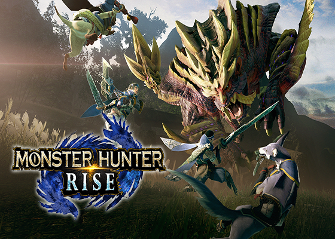

THE GAME
게임 소개: 몬스터 헌터 라이즈
2021년 3월 26일 닌텐도 스위치로 발매한 몬스터 헌터 시리즈. 제목의 RISE에는 「헌터가 필드를 자유롭게 누비는 경쾌한 액션의 이미지」와 「전 세계의 많은 분이 뜨겁게 즐길 수 있는 게임으로 만들고 싶다」는 의미가 담겨져 있다고 하며, 닌텐도 스위치의 특징인 휴대성을 살려 「언제든, 어디서든, 누구하고든, 가볍게 즐길 수 있는 몬스터 헌터」라는 콘셉트로 제작되었다고 한다. 시니어 프로듀서는 츠지모토 료조며, 메인 디렉터는 크로스와 포터블 시리즈 전반을 맡았던 이치노세 야스노리가 맡았다. 몬스터 헌터: 월드에서의 심리스 필드, 덧입는 장비, 세력 다툼 등의 일부 요소가 차용되고 있으며, 라이즈만의 새로운 요소도 많이 추가된 것을 확인할 수 있다. 전체적인 테마는 몬스터 헌터 포터블 서드처럼 일본풍으로, 거점과 헌터엔 닌자, 몬스터와 환경생물엔 요괴 모티브가 붙었다. 몬스터의 경우 이전 시리즈의 몬스터에게도 일본 요괴 모티브를 더했으며, 때문에 신규 몬스터의 작명도 일본어풍으로 하는 등 이전 시리즈와 차이가 있다. 한국어화 정발이 확정되었으며(유통 및 번역은 게임피아가 담당), 함께 발표된 몬스터 헌터 스토리즈 2와 연동 요소가 있다. PC판은 2022년에 발매될 예정.
개발 및 유통 : CAPCOM

출시일 : 2022년 초 예정
사용 엔진 : RE ENGINE